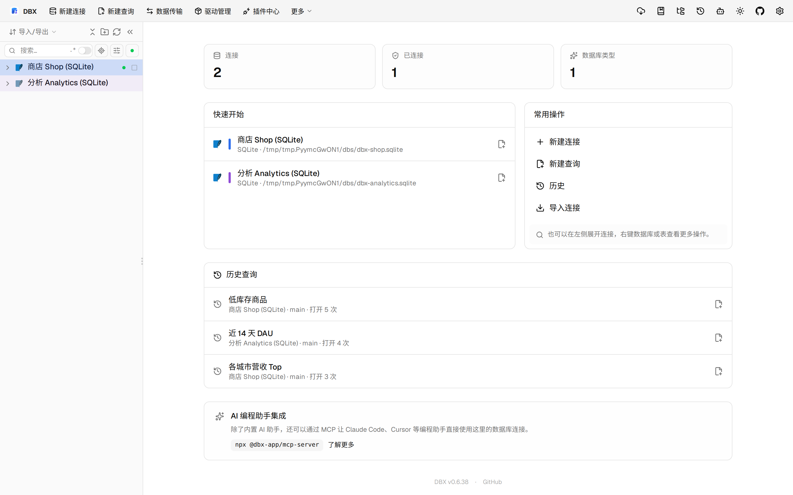
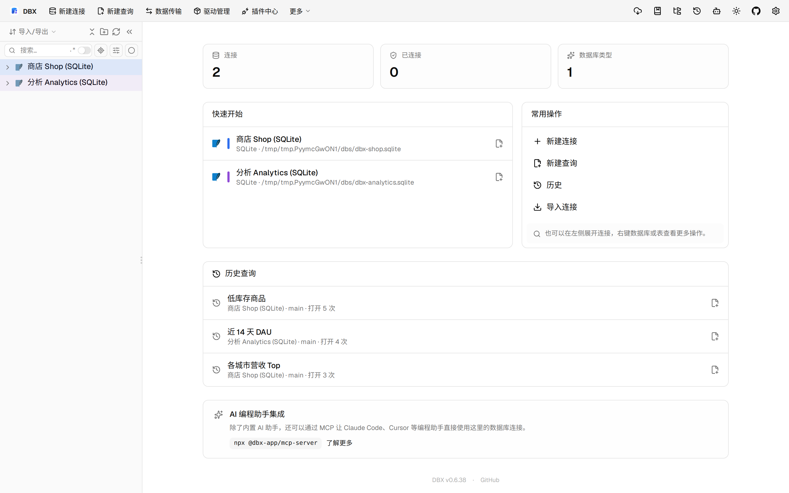
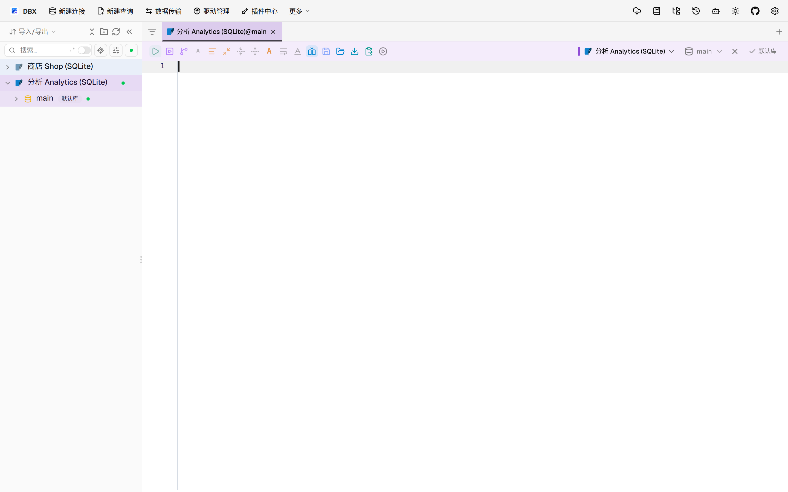

#11567 界面预览
commit cb2c913 · 回到 PR · 在 Oracle 和 OceanBase Oracle 连接的查询工具栏里新增了“运行诊断”入口，打开后可以按游标/请求显式查找诊断、采集并保存记录，并在弹窗中查看和对比已保存的诊断结果。配套补上了本地历史持久化、分页加载和取消/超时等状态展示，并区分 Oracle 累计统计与 OceanBase 审计请求的身份与指标口径。
⚠️ 这次录制有 8 步没能按计划执行；带 ⚠️ 的截图拍摄于步骤失败之后，画面未必是说明文字所描述的状态。
红线是鼠标走过的轨迹，红色圆环是一次点击；底部文字是这一步在做什么。多个场景各自从应用初始状态开始。空格暂停，← → 逐段查看。

⚠️ Oracle 工具栏入口 · 查看查询编辑器工具栏中的运行诊断入口

⚠️ 运行诊断弹窗 · 查看运行诊断弹窗初始内容

⚠️ OceanBase Oracle 请求诊断 · 查看 OceanBase Oracle 的 Trace ID 和时间范围输入区